컴퓨터응용가공산업기사 (2011-03-20 기출문제)
1과목: 기계가공법 및 안전관리
1. 강판으로 된 재료에 암나사 가공을 하는데 사용되는 것은?
- 스패너
- 스크레이퍼
- 다이스
- 탭
(정답률: 86%)

2. 브로치 가공에 대한 설명 중 옳지 않은 것은?
- 가공 흠의 모양이 복잡할수록 느린 속도로 가공한다.
- 절삭 깊이가 너무 작으면 인선의 마모가 증가한다.
- 브로치는 떨림을 방지하기 위하여 피치의 간격을 같게 한다.
- 절삭량이 많고 길이가 길 때에는 절삭날 수를 많게 한다.
(정답률: 68%)
3. 전해연마의 특징에 대한 설명으로 틀린 것은?
- 가공변질층이 없다.
- 내마모성, 내부식성이 좋아진다.
- 알루미늄, 구리 등도 용이하게 연마할 수 있다.
- 가공면에는 방향성이 있다.
(정답률: 70%)
4. 연삭숫돌에 사용되는 숫돌 입자 중 천연산인 것은?
- 코런덤
- 아록사이트
- 카아버런덤
- 탄화붕소
(정답률: 79%)
5. 연삭숫돌을 교환한 후 시운전 시간은 어느 정도로 하는가?
- 30초
- 1분
- 2분
- 3분 이상
(정답률: 82%)
6. 기계부품 또는 공구의 검사용, 게이지 정밀도 검사 등에 사용하는 게이지 블록은?
- 공작용
- 검사용
- 표준용
- 참조용
(정답률: 88%)
7. 기어(gear)의 이(tooth)수를 등분하고자 할 때 사용하는 밀링 부속품은?
- 분할대
- 바이스
- 정면커터
- 측면커터
(정답률: 84%)
8. 윤활유의 사용목적과 거리가 먼 것은?
- 윤활작용
- 냉각작용
- 비산작용
- 밀폐작용
(정답률: 70%)
9. 밀링에서 지름 150mm 커터를 사용하여 160rpm으로 절삭한다면 이 때 절삭속도는 약 몇 m/min인가?
- 75
- 85
- 102
- 194
(정답률: 72%)
10. 양두(羊頭)그라인더의 숫돌차로 일감을 연삭할 때 받침대와 숫돌의 간격은 몇 mm 이내로 조정하는가?
- 3mm
- 5mm
- 7mm
- 9mm
(정답률: 67%)
11. 비교측정의 장점이 아닌 것은?
- 측정범위가 넓고 표준 게이지가 필요 없다.
- 제품의 치수가 고르지 못한 것을 계산하지 않고 알 수 있다.
- 길이, 면의 각종 형상 측정, 공작기계의 정밀도 검사 등 사용범위가 넓다.
- 높은 정밀도의 측정이 비교적 용이하다.
(정답률: 60%)
12. 다음 그림은 밀링에서 더브테일 가공도면이다. X의 치수로 맞는 것은?
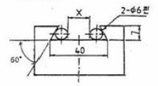
- 25.6⑤
- 23.608
- 22.712
- 18.712
(정답률: 55%)
13. 래핑작업의 장점이 아닌 것은?
- 정밀도가 높은 제품을 가공한다.
- 가공면이 매끈하다.
- 가공면의 내마모성이 좋다.
- 랩제의 잔류가 쉽다.
(정답률: 81%)
14. 선반 바이트의 설치 요령이다. 적합하지 않은 것은?
- 바이트 자루는 수평으로 고정한다.
- 바이트의 돌출 거리는 작업에 지장이 없는 한 길게 고정한다.
- 받침(shim)은 바이트 자루의 전체면이 닿도록 한다.
- 높이를 정확히 맞추기 위해서는 받침(shim) 1개 또는 두께가 다른 여러 개를 준비한다.
(정답률: 86%)
15. 수평식 보링 머신 중 새들이 없고, 길이방향의 이송은 드를 따라 컬럼이 이송되며, 중량이 큰 가공물을 가공하기에 가장 적합한 구조를 가지고 있는 형은?
- 테이블형
- 플레이너형
- 플로우형
- 코어형
(정답률: 81%)
16. 연삭 작업 시 주의할 점에 대한 설명으로 틀린 것은?
- 숫돌 커버를 반드시 설치하여 사용한다.
- 양 숫돌차의 입도는 항상 같게 하여야 한다.
- 연삭 작업시에는 보안경을 꼭 착용하여야 한다.
- 숫돌은 나무 해머로 가볍게 두들겨 음향검사를 한다.
(정답률: 80%)
17. 절삭공구 재료에서 W, Cr, V, Co 등의 원소를 함유하는 합금강은?
- 고탄소강
- 합금 공구강
- 고속도강
- 초경합금
(정답률: 69%)
18. 밀링 머신에서 하향 절삭에 비교한 상향절삭의 장점은 어느 것인가?
- 절삭시 백래시 영향이 적다.
- 일감의 고정이 유리하다.
- 표면거칠기가 좋다.
- 공구날의 마모가 느리다.
(정답률: 78%)
19. 선반의 베드(bed)에 관한 설명으로 틀린 것은?
- 미끄럼 면의 단면 모양은 원형과 구형이 있다.
- 주로 합금주철이나 구상흑연주철 등의 고급주철로 제작한다.
- 미끄럼면은 기계가공 또는 스크레이핑(scraping)을 한다.
- 내마모성을 높이기 위하여 표면경화처리를 하고 연삭가공을 한다.
(정답률: 59%)
20. 다음 중 드릴 가공의 종류가 아닌 것은?
- 리밍
- 카운터 보링
- 버핑
- 스폿 페이싱
(정답률: 72%)
2과목: 기계설계 및 기계재료
21. 다음 담금질 조직 중에서 용적변화(팽창)가 가장 큰 조직은?
- 팰라이트
- 오스테나이트
- 마텐자이트
- 솔바이트
(정답률: 80%)
22. 18-8형 스테인리스강에 대한 특징을 설명한 것으로 틀린 것은?
- Cr(18%)-Ni(8%)이다.
- 내식성이 우수하며 비자성체이다.
- 오스테나이트계이다
- 염산, 염소가스, 황산에 매우 강하다.
(정답률: 72%)
23. 다음 중 복합재료에서 섬유강화금속은?
- GFRP
- CFRP
- FRS
- FRM
(정답률: 82%)
24. 두랄루인은 기계적 성질이 탄소강과 비슷하며 비중은 1/3 정도로 가벼워서 항공기용 재료로 많이 사용되고 있다. 투랄루민의 성분을 올바르게 나타낸 것은?
- Al-Mg-Po-Ni
- Al-Fe-Mg-Cu
- Al-Cu-Mg-Mn
- Al-Mn-Co-Mg
(정답률: 85%)
25. 다음 중 뜨임처리 목적으로 틀린 것은?
- 담금질 응력 제거
- 치수의 경년 변화 방지
- 연마 균열의 방지
- 내마멸성 저하
(정답률: 70%)
26. 다음 중 금속 침투법 중에서 Al를 침투 시키는 것은?
- 세라다이징
- 알리마이징
- 실리코나이징
- 칼로나이징
(정답률: 74%)
27. 공정이 잇는 합금계에서 공정성분에 가까울수록 변화하는 성질을 설정한 것으로 틀린 것은?
- 전기 및 열전도율이 적어진다.
- 인장강도, 경도가 커진다.
- 용융점이 점차 상승한다.
- 연신율, 단면수축율이 감소한다.
(정답률: 47%)
28. 일반적으로 탄소강에서 탄소량이 증가할수록 증가하는 물리적 성질은?
- 비중
- 열팽창계수
- 전기저항
- 열전도도
(정답률: 65%)
29. 전연성이 좋고 색깔도 아름답기 때문에 장식용 금속잡화, 악기 등에 사용되고, 박(foil)으로 압연하여 금박의 대용으로도 사용되는 것은?
- 90%Cu ~ 10%Zn 합금
- 80%Cu ~ 20%Zn 합금
- 60%Cu ~ 40%Zn 합금
- 50%Cu ~ 50%Zn 합금
(정답률: 79%)
30. 다음 금속 중 전기 전도율이 가장 큰 것은?
- 알루미늄
- 마그네슘
- 구리
- 니켈
(정답률: 83%)
31. 1200rpm으로 2kW의 동력을 전달시키려고 할 때 기어잇수 Z=20, 모듈 m=4인 스퍼기어의 이에 걸리는 힘(피치원 접선방향 힘)은 약 몇 N 인가?
- 284
- 312
- 356
- 398
(정답률: 26%)
32. 미끄럼 베어링 재료의 구비조건으로 틀린 것은?
- 마찰게수가 클 것
- 내식성이 높을 것
- 피로한도가 높을 것
- 열전도율이 높을 것
(정답률: 73%)
33. 다음 중 동력전달장치로서 운전이 조용하고, 무단변속을 할 수 있으나 일정한 속도비를 얻기가 힘든 것은?
- 마찰차
- 기어
- 체인
- 플라이 휠
(정답률: 65%)
34. 단면 50mm×50mm이고, 길이 100mm의 탄소강재가 있다. 여기에 10kN의 인장력을 길이 방향으로 주었을 때, 0.4mm가 늘어났다면, 이 때 변형률은 얼마인가?
- 0.0025
- 0.004
- 0.0125
- 0.025
(정답률: 57%)
35. 동일 조건하에서 코일 스프링 처짐량을 2배로 하려면, 유효감김수는 몇 배가 되어야 하는가? (단, 스프링 소선 지름, 코일 평균 지름, 작용하중 및 스프링의 전단탄성계수 등은 일정하다.)
- 2배
- 4배
- 8배
- 16배
(정답률: 62%)
36. 로프 전동의 특징에 대한 설명으로 틀린 것은?
- 전동경로가 직선이 아닌 경우에도 사용이 가능하다.
- 벨트 전동과 비교하여 큰 동력을 전달하는데 불리하다.
- 장거리의 동력전달이 가능하다.
- 정확한 속도비의 전동이 불확실하다.
(정답률: 48%)
37. 그림과 같은 블록 브레이크에서 드럼축에 156.96N·m의 제동코크를 발생시키기 위해, 레버 끝에 F=981N의 힘이 필요한 경우, 레버의 길이 a는 약 몇 mm인가? (단, 블록과 드럼사이 마찰계수 μ=0.2 이다.)
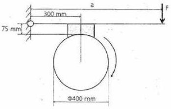
- 930
- 1⑤0
- 1140
- 1260
(정답률: 27%)
38. 다음 그림과 같은 맙대기 용접 이음에서, 인장하중 W[N], 강판의 두께 h[mm]라 할 때 길이ℓ[mm]를 구하는 식으로 가장 옳은 것은? (단, 상하의 용접부 목두께가 각각 t1[mm], t2[mm] 이고, 용접부에서 발생하는 인장응력σt[N/mm2]이다.
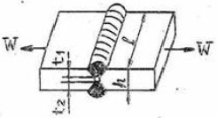
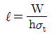
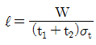
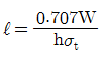
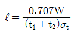
(정답률: 66%)
39. 미터나사의 피치가 3mm이고 유효 지름 d는 22.⑤1mm 일 때 나사 효율 η는 약 얼마인가? (단, 마찰 계수 μ = 0.1⑤ 이다.)
- η = 25.2%
- η = 32.2%
- η = 39.2%
- η = 48.8%
(정답률: 29%)
40. 400rpm으로 4kW의 동력을 전달하는 중실 스핀들 축의 최소 지름은 약 몇 mm인가? (단, 축의 허용전단응력은 20.60MPa 이다.)
- 29
- 13
- 48
- 36
(정답률: 31%)
3과목: 컴퓨터응용가공
41. 도넛과는 달리 구멍이 없는 형태의 간단한 다면체의 경계를 표현하는 오일러 공식은? (단, V는 꼭짓점의 수, E는 모서리의 수, F는 면의 수를 의미한다.)
- V – E – F = 2
- V + E – F = 2
- V – E + F = 2
- V + E + F =2
(정답률: 66%)
42. 자율곡면을 모델링할 때 곡면을 분할하여 정의하는 것이 효율적이다. 이처럼 분할된 단위 곡면을 무엇이라고 하는가?
- 세그먼트(segment)
- 패치(patch)
- 엘리먼트(element)
- 프리미티브(primitive)
(정답률: 67%)
43. 3차원 물체의 형상을 물체상의 점과 특징선만을 이용항 표현하는 방법은?
- 와이어 프레임 모델링
- 솔리드 모델링
- 윈도우 모델링
- 서피스 모델링
(정답률: 83%)
44. 다음은 가공 경로 계획에서 parmetric 방식과 Cartesian방식을 비교하여 설명한 것이다. Cartesian 방식에 대한 설명으로 적절한 것은?
- 규칙적인 사각형 곡면을 가공하는 경우에 적합하다.
- 수치적 계산이 더 복잡하다.
- 곡면이 삼각형 패치로 정의된 경우에는 부적합하다.
- 피삭체 형상에 따라 적합하지 못한 경우가 있다.
(정답률: 56%)
45. 솔리드 모델링에서 사용되는 일반적인 불리안(Boolean)연산 방법이 아닌 것은?
- 합(union)
- 차(difference)
- 급(multiplication)
- 적(intersection)
(정답률: 71%)
46. 3차원 형상 모델을 표현하는 방식 중에서 와이어프레임모델링(wireframe modeling)방식의 특징이 아닌 것은?
- 데이터의 구조가 간단하여 모델링 작업이 비교적 쉽다.
- 단면도의 작성이 불가능하다.
- 보이지 않는 부분 즉 은선의 제거가 불가능하다.
- NC코드 생성이 가능하다.
(정답률: 62%)
47. 다음 그림과 같이 2차원 단면 곡선을 정해진 궤적을 ᄄᆞ라 이동시켜서 3차원 형상을 생성시키는 슬리드 모델링 기법은?
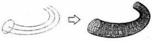
- Blending
- Skinning
- Shearing
- Sweeping
(정답률: 79%)
48. 다음은 통합 CAD/CAM 시스템을 사용한 파트 프로그래밍 방법의 단계이다. 그 순서를 가장 알맞게 배열한 것은?
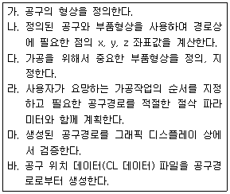
- 다 → 가 → 라 → 나 → 마 → 바
- 다 → 가 → 나 → 라 → 마 → 바
- 다 → 마 → 라 → 가 → 나 → 바
- 다 → 라 → 가 → 마 → 바 → 나
(정답률: 53%)
49. 서로 다른 CAD/CAM 시스템 사이에 제품 정의 데이터를 교환하기 위하여 개발한 최초의 표준 교환 형식은?
- IGES
- DXF
- STEP
- PDES
(정답률: 78%)
50. B-spline과 NURB 곡선에 대한 설명으로 잘못된 것은?
- B-spline 곡선식은 NURB(Non-uniform Rational B-spline) 곡선식을 포함하는 보다 일반적인 형태의 곡선이다.
- B-spline 곡선에서는 곡선의 모양을 변화시키기 위해서 각각의 control point의 좌표를 조절하지만, NURB 곡선에서는 동차 좌표값까지 포함하여 4개의 자유도가 있다.
- B-spline 곡선은 원, 타원, 포물선 등 원추곡선을 근사할 수 있다.
- NURB 곡선은 원, 타원, 포물선 등 원추곡선을 표현할 수 있어, 프로그램 개발 시 모든 곡선을 NURB곡선으로 나타냄을써 작업량을 줄여준다.
(정답률: 35%)
51. CAD 프로그램에서 자유 곡선을 표현할 때 주로 많이 사용하는 방정식의 형태는?
- 양함수식(explicit equation)
- 음함수식(implicit equation)
- 하이브리드식(hybrid equation)
- 매개변수식(parametric equation)
(정답률: 76%)
52. CAD시스템에 사용되는 입력장치에 해당되지 않는 것은?
- 키보드
- 라이트 펜
- 마우스
- 플로터
(정답률: 82%)
53. 다음 중 분산 처리형 시스템이 갖추어야 할 기본 성능이 아닌 것은?
- 여러 시스템 중에서 일부 시스템이 고장이 발생하더라도 나머지는 정상작동 되어야 한다.
- 자료 처리 및 계산 작업은 주(main)시스템에서 이루어져야 한다.
- 구성된 시스템별 자료는 다른 컴퓨터 시스템 자료의 내용에 변화를 주지 말아야 한다.
- 사용자가 구성한 자료나 프로그램을 다른 사용자가 사용하고자 할 때는 정보 통신망을 통해서 언제라도 해당 자료를 사용하거나 보내줄 수 있어야 한다.
(정답률: 72%)
54. 다음 중 중앙처리장치(CPU)의 구성요소가 아닌 것은?
- 기억장치
- 제어장치
- 연산논리장치
- 레이저 빔 기억장치
(정답률: 83%)
55. 3차원 뷰잉(viewing) 기법 중 아이소메트릭 투영(isometric projection)에 해당하는 투명 기법은?
- 경사 투영(oblique projection)
- 원근 투영(perspective projection)
- 직교 투영(orthographic projection)
- 캐비넷 투영(cabinet projextion)
(정답률: 49%)
56. 2차원 좌표[x,y,1]와 동차 변환행렬
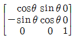
를 이요한 회전변환에서 회전축은?- x 축
- y 축
- z 축
- x z 축
(정답률: 48%)
57. 다음은 2차원에서 동차좌표에 의한 변환행렬을 나타낸 것이다. 평행 이동에 관계되는 것은?
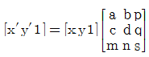
- a, b
- c, d
- p, q
- m, n
(정답률: 71%)
58. 드릴링으로 길이 150mm 구멍을 가공하려고 한다. 공구의 분당 회전수는 500rpm, 공구가 1회전 당 드릴 이송량은 0.1mm일 때, 구멍 가공시간은?
- 1분
- 2분
- 3분
- 4분
(정답률: 63%)
59. 여러 대의 NC 공작기계를 한 대의 컴퓨터에 결합시켜 제어하는 시스템은?
- CNC
- DNC
- MPU
- MCU
(정답률: 86%)
60. 3차 베지어 곡면(Bezier Surface)에 관한 설명 중 틀린 것은?
- 3차 베지어 곡면은 조정점(control points)의 일반적인 형상을 따른다.
- 3차 베지어 곡면은 조정점들로 만들어지는 블록포 내부(Convex Hull)에 포함된다.
- 3차 베지어 곡면의 코너와 코너 조정점은 일치한다.
- 3차 베지어 곡면의 패치(patch)당 조정점의 개수는 9개이다.
(정답률: 70%)
4과목: 기계제도 및 CNC공작법
61. 다음 투상도 중 KS 제도 통칙에 따라 올바르게 작도된 투상도는?
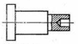
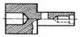
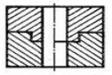
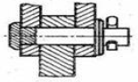
(정답률: 79%)
62. 도면에서 다음에 열거한 선이 같은 장소에 중보되었다. 어느 선으로 표시하여야 하는가? (치수 보조선, 절단선, 숨은선, 중심선)
- 숨은선
- 중심선
- 치수 보조선
- 절단선
(정답률: 75%)
63. 일반구조용 압연강재의 KS 재료 표시기호 “SS330”에서 “330”은 무엇을 뜻하는가?
- 최저 인장 강도
- 탄소 함유량
- 경도
- 종별 번호
(정답률: 70%)
64. 구멍의 치수가
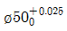
이고, 축의 치수가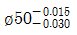
이라면 무슨 끼워 맞춤인가?- 헐거운 끼워 맞춤
- 중간 끼워 맞춤
- 억지 끼워 맞춤
- 가열 끼워 맞춤
(정답률: 70%)
65. 다음과 같은 리벳의 호칭법으로 올바르게 나타낸 것은? (단, 재질 SV330이다.)
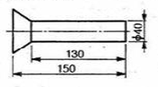
- 납작머리리벳 40×150 SV330
- 접시머리리벳 40×150 SV330
- 납작머리리벳 40×130 SV330
- 점시머리리벳 40×130 SV330
(정답률: 70%)
66. 다음 중 스크레이핑(Scraping) 가공을 나타내는 가공기호는?
- FS
- PS
- FF
- SH
(정답률: 81%)
67. 제3각 투상법으로 정면도와 평면도를 그림과 같이 나타낼 경우 가장 적합한 우측면도?
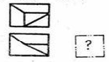
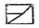
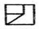
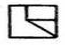
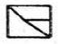
(정답률: 46%)
68. 그림과 같은 표면의 결 도시방법의 기호 설명이 올바르게 된 것은?
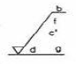
- c’ : 기준 길이
- b : 줄무늬 방향 기호
- f : Rs의 값
- d : 가공 방법
(정답률: 54%)
69. 제3각법으로 그린 다음과 같은 3면도 중 각 도면간의 관계가 올바르게 그려진 것은?
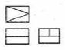
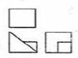
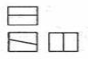
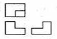
(정답률: 67%)
70. KS 나사의 표시에 관한 설명 중 올바른 것은?
- 나사산의 강김 방향은 오른나사인 경우만 RH로 명기하고, 왼 나사인 경우 따로 명기하지 않는다.
- 미터 가는 나사는 피치를 생략하거나 산의 수로 표시한다.
- 2줄 이상인 경우 그 줄 수를 표시하며 줄 대신에 L로 표시할 수 있다.
- 피치를 산의 수로 표시하는 나사(유니파이 나사 제외)의 경우 나사의 호칭은 다음과 같이 나나낸다.
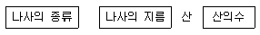
(정답률: 62%)
71. CNC공작기계의 구성에서 사람의 두뇌부분에 해당되는 것은?
- 서보기구
- 볼 나사
- 제어부
- 위치검출기
(정답률: 70%)
72. 머시닝센터에서 공구를 자동으로 장착하고 교환하는 장치는?
- ATC
- APC
- ATP
- APT
(정답률: 84%)
73. CNC선반의 준비기능 중 자동 원정 복귀 기능은?
- G27
- G28
- G29
- G30
(정답률: 78%)
74. 서보모터에서 위치 및 속도를 검출하여 피드백(feed back)하는 제어 방식은?
- 개방회로 방식
- 하이브리드 방식
- 반폐쇄회로 방식
- 폐쇄회로 방식
(정답률: 61%)
75. 다음 선삭용 ISO 인서트 규격 표시법에서 04는 무엇을 의미하는가?
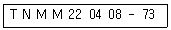
- 인선 길이
- 날끝 반지름
- 공차
- 인선 높이
(정답률: 50%)
76. 와이어 컷 방전가공에서 세컨드 컷을 함으로써 얻을 수 있는 주된 효과는?
- 와이어 절약
- 가공속도 조절
- 다이 형상의 돌기부분 제거
- 이온교환수지의 수명 연장
(정답률: 84%)
77. 머시닝센터로 그림의 각 점을 시작점으로 하여 시계방향으로 360° 원을 가공하고자 할 때 틀린 지령은?
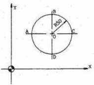
- A점 : G02 I50 F80 ;
- B점 : G02 J50 F80 ;
- C점 : G02 I-50 F80 ;
- D점 : G02 J50 F80 ;
(정답률: 54%)
78. 머시닝센터에서 100rpm으로 회전하는 주축에 피치가 2mm인 나사를 가공하려 할 때 이송 속도(mm/min)는?
- 100
- 200
- 300
- 400
(정답률: 81%)
79. 다음 CNC선반 프로그램에서 ø50일 때 주축의 회전수는 약 얼마인가?
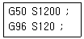
- 1200rpm
- 764rpm
- 120rpm
- 634rpm
(정답률: 66%)
80. CNC공작기계의 일상점검 내용 중 매일 점검사항이 아닌 것은?
- 외관 점검
- 유량 점검
- 기계정도 점검
- 압력 점검
(정답률: 75%)